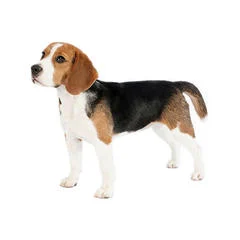
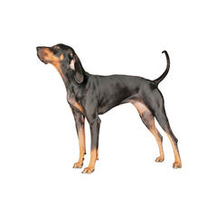
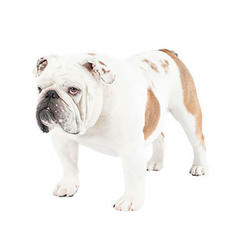
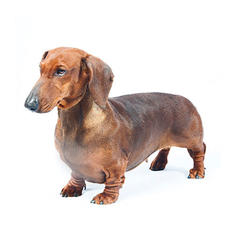

| Image |
Breed |
Description |
 |
Alaskan Malmute |
It is a large Artic sled dog that has shades of light gray to black color. They can also carry large loads over long distances. |
 |
American Foxhound |
A medium to large dog that could be any color. It is bred to run fast, it is also a mild tempered and easygoing breed. |
 |
Basset Hound |
Its size is medium and they can weigh up to 45 - 65 pounds. This dog is patient with children and can get along well with other dogs. |
|  |
Beagle |
A small to meduim dog that have an adorable face but they can also be loving. They are also great for being a family dog. |
 |
Belgian Malinois |
A medium size dog that is alert and confident. This dog is also a popular police and military dog. It also weighs up to 60 to 75 pounds. |
|  |
Black and Tan Coonhound |
It has gread endurance and a powerful nose. Coonhounds are also used to track deer and bear. This dog is equally good at hunting alone. |
|  |
Bulldog |
Bulldogs are very friendly and courageous. They can also live up to 8 to 10 years. Bulldogs are also very loyal companions. |
|  |
Dachshund |
Dachshunds are also nicknamed as "wiener dogs". They may be small but they have a bold personality and they also feature a comical and endearing nature. |
 |
English Foxhound |
English Foxhounds are prized for their stamina, keen nose and determination. The are also one the rarest breeds in the U.S. |
 |
Bloodhound |
This dog is used as a tracking dog in criminal searches. A bloodhound also has an extaordinary sense of smell. |